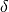
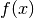
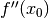
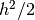
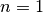
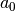

Introduction¶
The general problem of differentiation of a function typically pops up in three ways in Python.
- The symbolic derivative of a function.
- Compute numerical derivatives of a function defined only by a sequence of data points.
- Compute numerical derivatives of a analytically supplied function.
Clearly the first member of this list is the domain of the symbolic toolbox SymPy, or some set of symbolic tools. Numerical differentiation of a function defined by data points can be achieved with the function gradient, or perhaps by differentiation of a curve fit to the data, perhaps to an interpolating spline or a least squares spline fit.
The third class of differentiation problems is where Numdifftools is valuable. This document will describe the methods used in Numdifftools and in particular the Derivative class.
Numerical differentiation of a general function of one variable¶
Surely you recall the traditional definition of a derivative, in terms of a limit.
(1)
For small , the limit approaches . This is a one-sided approximation for the derivative. For a fixed value of , this is also known as a finite difference approximation (a forward difference.) Other approximations for the derivative are also available. We will see the origin of these approximations in the Taylor series expansion of a function  around some point  .
.
(2)
Truncate the series in (2) to the first three terms, divide by and rearrange yields the forward difference approximation (1):
(3)
When is small, and any higher powers are vanishingly small. So we tend to ignore those higher powers, and describe the approximation in (3) as a first order approximation since the error in this approximation approaches zero at the same rate as the first power of . [1] The values of  and , while unknown to us, are fixed constants as varies.
Higher order approximations arise in the same fashion. The central difference (4) is a second order approximation.
(4)
Unequally spaced finite difference rules¶
While most finite difference rules used to differentiate a function will use equally spaced points, this fails to be appropriate when one does not know the final spacing. Adaptive quadrature rules can succeed by subdividing each sub-interval as necessary. But an adaptive differentiation scheme must work differently, since differentiation is a point estimate. Derivative generates a sequence of sample points that follow a log spacing away from the point in question, then it uses a single rule (generated on the fly) to estimate the desired derivative. Because the points are log spaced, the same rule applies at any scale, with only a scale factor applied.
Odd and even transformations of a function¶
Returning to the Taylor series expansion of around some point , an even function [2] around must have all the odd order derivatives vanish at . An odd function has all its even derivatives vanish from its expansion. Consider the derived functions and .
(5)
(6)
The Taylor series expansion of around zero has the useful property that we have killed off any even order terms, but the odd order terms are identical to , as expanded around .
(7)
Likewise, the Taylor series expansion of has no odd order terms or a constant term, but other even order terms that are identical to .
(8)
The point of these transformations is we can rather simply generate a higher order approximation for any odd order derivatives of by working with . Even order derivatives of are similarly generated from . For example, a second order approximation for is trivially written in (9) as a function of .
(9)
We can do better rather simply, so why not? (10) shows a fourth order approximation for .
(10)
Again, the next non-zero term (11) in that expansion has a higher power of on it, so we would normally ignore it since the lowest order neglected term should dominate the behavior for small .
(11)
Derivative uses similar approximations for all derivatives of  up to any order. Of course, it is not always possible for evaluation of a function on both sides of a point, as central difference rules will require. In these cases, you can specify forward or backward difference rules as appropriate. You can also specify to use the complex step derivative, which we will outline in the next section.
up to any order. Of course, it is not always possible for evaluation of a function on both sides of a point, as central difference rules will require. In these cases, you can specify forward or backward difference rules as appropriate. You can also specify to use the complex step derivative, which we will outline in the next section.
Complex step derivative¶
The derivation of the complex-step derivative approximation is accomplished by replacing in (2) with a complex step :
(12)
Taking only the imaginary parts of both sides gives
(13)
Dividing with  and rearranging yields:
and rearranging yields:
(14)
Terms with order or higher can safely be ignored since the interval can be chosen up to machine precision
without fear of rounding errors stemming from subtraction (since there are not any). Thus to within second-order the complex-step derivative approximation is given by:
(15)
Next, consider replacing the step in (8) with the complex step :
(16)
Similarly dividing with  and taking only the imaginary components yields:
(17)
This approximation is still subject to difference errors, but the error associated with this approximation is proportional to . Neglecting these higher order terms yields:
(18)
See [LaiCrassidisCheng2005] and [Ridout2009] for more details. The complex-step derivative in numdifftools.Derivative has truncation error for both odd and even order derivatives for . For  the truncation error is on the order of , so truncation error can be eliminated by choosing steps to be very small. The first order complex-step derivative avoids the problem of round-off error with small steps because there is no subtraction. However, the function to differentiate needs to be analytic. This method does not work if it does not support complex numbers or involves non-analytic functions such as e.g.: abs, max, min. For this reason the central method is the default method.
High order derivative¶
So how do we construct these higher order approximation formulas? Here we will deomonstrate the principle by computing the 6’th order central approximation for the first-order derivative. In order to do so we simply set equal to its 3-term Taylor expansion:
(19)
By inserting three different stepsizes into (19), eg , we get a set of linear equations:
(20)
The solution of these equations are simply:
(21)
The first row of (21) gives the coefficients for 6’th order approximation. Looking at at row two and three, we see also that this gives the 6’th order approximation for the 3’rd and 5’th order derivatives as bonus. Thus this is also a general method for obtaining high order differentiation rules. As previously noted these formulas have the additional benefit of beeing applicable to any scale, with only a scale factor applied.
Richardson extrapolation methodology applied to derivative estimation¶
Some individuals might suggest that the above set of approximations are entirely adequate for any sane person. Can we do better?
Suppose we were to generate several different estimates of the approximation in (3) for different values of at a fixed . Thus, choose a single , estimate a corresponding resulting approximation to , then do the same for . If we assume that the error drops off linearly as , then it is a simple matter to extrapolate this process to a zero step size. Our lack of knowledge of is irrelevant. All that matters is is small enough that the linear term dominates so we can ignore the quadratic term, therefore the error is purely linear.
(22)
The linear extrapolant for this interval halving scheme as is given by:
(23)
Since I’ve always been a big fan of convincing myself that something will work before I proceed too far, lets try this out in Python. Consider the function . Generate a pair of approximations to , once at of 0.1, and the second approximation at that value. Recall that , so at x = 0, the derivative should be exactly 1. How well will we do?
>>> from numpy import exp, allclose
>>> f = exp
>>> dx = 0.1
>>> df1 = (f(dx) - f(0))/dx
>>> allclose(df1, 1.05170918075648)
True
>>> df2 = (f(dx/2) - f(0))/(dx/2)
>>> allclose(df2, 1.02542192752048)
True
>>> allclose(2*df2 - df1, 0.999134674284488)
True
In fact, this worked very nicely, reducing the error to roughly 1 percent of our initial estimates. Should we be surprised at this reduction? Not if we recall that last term in (3). We saw there that the next term in the expansion was . Since was 0.1 in our experiment, that 1 percent number makes perfect sense.
The Richardson extrapolant in (23) assumed a linear process, with a specific reduction in by a factor of 2. Assume the two term (linear + quadratic) residual term in (3), evaluating our approximation there with a third value of . Again, assume the step size is cut in half again. The three term Richardson extrapolant is given by:
(24)
A quick test in Python yields much better results yet.
>>> from numpy import exp, allclose
>>> f = exp
>>> dx = 0.1
>>> df1 = (f(dx) - f(0))/dx
>>> allclose(df1, 1.05170918075648)
True
>>> df2 = (f(dx/2) - f(0))/(dx/2)
>>> allclose(df2, 1.02542192752048)
True
>>> df3 = (f(dx/4) - f(0))/(dx/4)
>>> allclose(df3, 1.01260482097715)
True
>>> allclose(1./3*df1 - 2*df2 + 8./3*df3, 1.00000539448361)
True
Again, Derivative uses the appropriate multiple term Richardson extrapolants for all derivatives of up to any order [3]. This, combined with the use of high order approximations for the derivatives, allows the use of quite large step sizes. See [LynessMoler1966] and [LynessMoler1969]. How to compute the multiple term Richardson extrapolants will be elaborated further in the next section.
Multiple term Richardson extrapolants¶
We shall now indicate how we can calculate the multiple term Richardson extrapolant for by rearranging (19):
(25)
This equation has the form
(26)
where L stands for and for the numerical differentiation formula .
By neglecting higher order terms () and inserting three different stepsizes into (26), eg , we get a set of linear equations:
(27)
The solution of these equations are simply:
(28)\begin{bmatrix} L \\ \delta^2 a_0 \\ \delta^4 a_1 \end{bmatrix} = \frac{1}{45} \begin{bmatrix} 1 & -20 & 64 \\ -20 & 340 & -320 \\ 64 & -320 & 256 \end{bmatrix} \begin{bmatrix} \phi(\delta) \\ \phi(\delta/2) \\ \phi(\delta/4) \end{bmatrix}
The first row of (28) gives the coefficients for Richardson extrapolation scheme.
Uncertainty estimates for Derivative¶
We can view the Richardson extrapolation step as a polynomial curve fit in the step size parameter . Our desired extrapolated value is seen as simply the constant term coefficient in that polynomial model. Remember though, this polynomial model (see (10) and (11)) has only a few terms in it with known non-zero coefficients. That is, we will expect a constant term , a term of the form , and a third term .
A neat trick to compute the statistical uncertainty in the estimate of our desired derivative is to use statistical methodology for that error estimate. While I do appreciate that there is nothing truly statistical or stochastic in this estimate, the approach still works nicely, providing a very reasonable estimate in practice. A three term Richardson-like extrapolant, then evaluated at four distinct values for , will yield an estimate of the standard error of the constant term, with one spare degree of freedom. The uncertainty is then derived by multiplying that standard error by the appropriate percentile from the Students-t distribution.
>>> import scipy.stats as ss
>>> allclose(ss.t.cdf(12.7062047361747, 1), 0.975)
True
This critical level will yield a two-sided confidence interval of 95 percent.
These error estimates are also of value in a different sense. Since they are efficiently generated at all the different scales, the particular spacing which yields the minimum predicted error is chosen as the best derivative estimate. This has been shown to work consistently well. A spacing too large tends to have large errors of approximation due to the finite difference schemes used. But a too small spacing is bad also, in that we see a significant amplification of least significant fit errors in the approximation. A middle value generally seems to yield quite good results. For example, Derivative will estimate the derivative of automatically. As we see, the final overall spacing used was 0.0078125.
>>> import numdifftools as nd
>>> from numpy import exp, allclose
>>> f = nd.Derivative(exp, full_output=True)
>>> val, info = f(1)
>>> allclose(val, 2.71828183)
True
>>> allclose(info.error_estimate, 6.927791673660977e-14)
True
>>> allclose(info.final_step, 0.0078125)
True
However, if we force the step size to be artificially large, then approximation error takes over.
>>> f = nd.Derivative(exp, step=1, full_output=True)
>>> val, info = f(1)
>>> allclose(val, 3.19452805)
True
>>> allclose(val-exp(1), 0.47624622)
True
>>> allclose(info.final_step, 1)
True
And if the step size is forced to be too small, then we see noise dominate the problem.
>>> f = nd.Derivative(exp, step=1e-10, full_output=True)
>>> val, info = f(1)
>>> allclose(val, 2.71828093)
True
>>> allclose(val - exp(1), -8.97648138e-07)
True
>>> allclose(info.final_step, 1.0000000e-10)
True
Numdifftools, like Goldilocks in the fairy tale bearing her name, stays comfortably in the middle ground.
Derivative in action¶
How does numdifftools.Derivative work in action? A simple nonlinear function with a well known derivative is . At , the derivative should be 1.
>>> f = nd.Derivative(exp, full_output=True)
>>> val, info = f(0)
>>> allclose(val, 1)
True
>>> allclose(info.error_estimate, 5.28466160e-14)
True
A second simple example comes from trig functions. The first four derivatives of the sine function, evaluated at , should be respectively , or .
>>> from numpy import sin, allclose
>>> import numdifftools as nd
>>> df = nd.Derivative(sin, n=1)
>>> allclose(df(0), 1.)
True
>>> ddf = nd.Derivative(sin, n=2)
>>> allclose(ddf(0), 0.)
True
>>> dddf = nd.Derivative(sin, n=3)
>>> allclose(dddf(0), -1.)
True
>>> ddddf = nd.Derivative(sin, n=4)
>>> allclose(ddddf(0), 0.)
True
Gradient and Hessian estimation¶
Estimation of the gradient vector (numdifftools.Gradient) of a function of multiple variables is a simple task, requiring merely repeated calls to numdifftools.Derivative. Likewise, the diagonal elements of the hessian matrix are merely pure second partial derivatives of a function. numdifftools.Hessdiag accomplishes this task, again calling numdifftools.Derivative multiple times. Efficient computation of the off-diagonal (mixed partial derivative) elements of the Hessian matrix uses a scheme much like that of numdifftools.Derivative, then Richardson extrapolation is used to improve a set of second order finite difference estimates of those mixed partials.
Multivariate calculus examples¶
Typical usage of the gradient and Hessian might be in optimization problems, where one might compare an analytically derived gradient for correctness, or use the Hessian matrix to compute confidence interval estimates on parameters in a maximum likelihood estimation.
Gradients and Hessians¶
>>> import numpy as np
>>> def rosen(x): return (1-x[0])**2 + 105.*(x[1]-x[0]**2)**2
- Gradient of the Rosenbrock function at [1,1], the global minimizer
>>> grad = nd.Gradient(rosen)([1, 1])
The gradient should be zero (within floating point noise)
>>> allclose(grad, 0)
True
- The Hessian matrix at the minimizer should be positive definite
>>> H = nd.Hessian(rosen)([1, 1])
The eigenvalues of H should be positive
>>> li, U = np.linalg.eig(H)
>>> li>0
array([ True, True], dtype=bool)
- Gradient estimation of a function of 5 variables
>>> f = lambda x: np.sum(x**2) >>> grad = nd.Gradient(f)(np.r_[1, 2, 3, 4, 5]) >>> allclose(grad, [ 2., 4., 6., 8., 10.]) True
- Simple Hessian matrix of a problem with 3 independent variables
>>> f = lambda x: x[0] + x[1]**2 + x[2]**3 >>> H = nd.Hessian(f)([1, 2, 3]) >>> allclose(H, np.diag([0, 2, 18])) True
- A semi-definite Hessian matrix
>>> H = nd.Hessian(lambda xy: np.cos(xy[0] - xy[1]))([0, 0])
one of these eigenvalues will be zero (approximately)
>>> np.abs(np.linalg.eig(H)[0]) < 1e-12
array([ True, False], dtype=bool)
Directional derivatives¶
The directional derivative will be the dot product of the gradient with the (unit normalized) vector. This is of course possible to do with numdifftools and you could do it like this for the Rosenbrock function at the solution, x0 = [1,1]:
>>> v = np.r_[1, 2]/np.sqrt(5)
>>> x0 = [1, 1]
>>> directional_diff = np.dot(nd.Gradient(rosen)(x0), v)
This should be zero.
>>> allclose(directional_diff, 0)
True
Ok, its a trivial test case, but it easy to compute the directional derivative at other locations:
>>> v2 = np.r_[1, -1]/np.sqrt(2)
>>> x2 = [2, 3]
>>> directionaldiff = np.dot(nd.Gradient(rosen)(x2), v2)
>>> allclose(directionaldiff, 743.87633380824832)
True
Jacobian matrix¶
Jacobian matrix of a scalar function is just the gradient
>>> jac = nd.Jacobian(rosen)([2, 3])
>>> grad = nd.Gradient(rosen)([2, 3])
>>> allclose(jac, grad)
True
Jacobian matrix of a linear system will reduce to the design matrix
>>> A = np.random.rand(5,3)
>>> b = np.random.rand(5)
>>> fun = lambda x: np.dot(x, A.T) - b
>>> x = np.random.rand(3)
>>> jac = nd.Jacobian(fun)(x)
This should be essentially zero at any location x
>>> allclose(jac - A, 0)
True
The jacobian matrix of a nonlinear transformation of variables evaluated at some arbitrary location [-2, -3]
>>> fun = lambda xy: np.r_[xy[0]**2, np.cos(xy[0] - xy[1])]
>>> jac = nd.Jacobian(fun)([-2, -3])
>>> np.allclose(jac, [[-4., 0.],
... [-0.84147098, 0.84147098]])
True
Conclusion¶
numdifftools.Derivative is an a adaptive scheme that can compute the derivative of arbitrary (well behaved) functions. It is reasonably fast as an adaptive method. Many options have been provided for the user who wishes the ultimate amount of control over the estimation.
Acknowledgments¶
The numdifftools package was originally a translation of an adaptive numerical differentiation toolbox written in Matlab by John D’Errico [DErrico2006].
Numdifftools has as of version 0.9 been extended with some of the functionality found in the statsmodels.tools.numdiff module written by Josef Perktold [Perktold2014].
References¶
| [LynessMoler1966] | Lyness, J. M., Moler, C. B. (1966). Vandermonde Systems and Numerical Differentiation. Numerische Mathematik. |
| [LynessMoler1969] | Lyness, J. M., Moler, C. B. (1969). Generalized Romberg Methods for Integrals of Derivatives. Numerische Mathematik. |
| [DErrico2006] | D’Errico, J. R. (2006), Adaptive Robust Numerical Differentiation http://www.mathworks.com/matlabcentral/fileexchange/13490-adaptive-robust-numerical-differentiation |
| [Perktold2014] | Perktold, J (2014), numdiff package http://statsmodels.sourceforge.net/0.6.0/_modules/statsmodels/tools/numdiff.html |
| [LaiCrassidisCheng2005] | K.-L. Lai, J.L. Crassidis, Y. Cheng, J. Kim (2005), New complex step derivative approximations with application to second-order kalman filtering, AIAA Guidance, Navigation and Control Conference, San Francisco, California, August 2005, AIAA-2005-5944. |
| [Ridout2009] | Ridout, M.S. (2009) Statistical applications of the complex-step method of numerical differentiation. The American Statistician, 63, 66-74 |
| [NAG] | NAG Library. NAG Fortran Library Document: D04AAF |
Footnotes
| [1] | We would normally write these additional terms using O() notation, where all that matters is that the error term is or perhaps , but explicit understanding of these error terms will be useful in the Richardson extrapolation step later on. |
| [2] | An even function is one which expresses an even symmetry around a given point. An even symmetry has the property that . Likewise, an odd function expresses an odd symmetry, wherein . |
| [3] | For practical purposes the maximum order of the derivative is between 4 and 10 depending on the function to differentiate and also the method used in the approximation. |